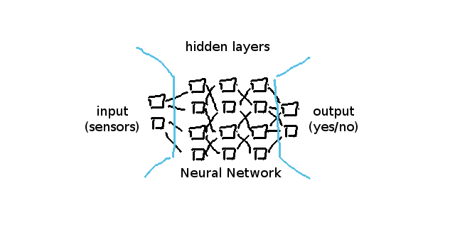
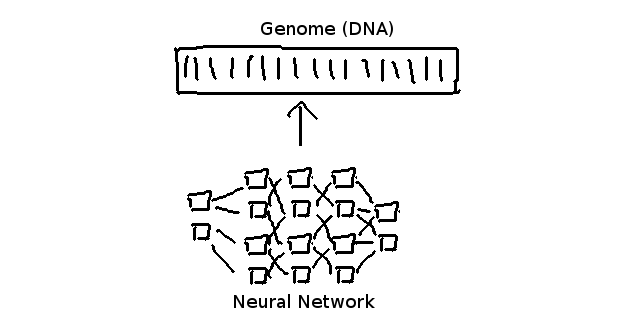
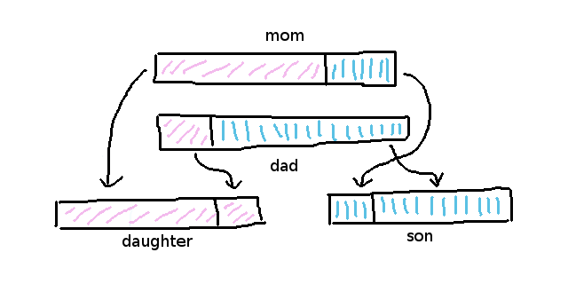
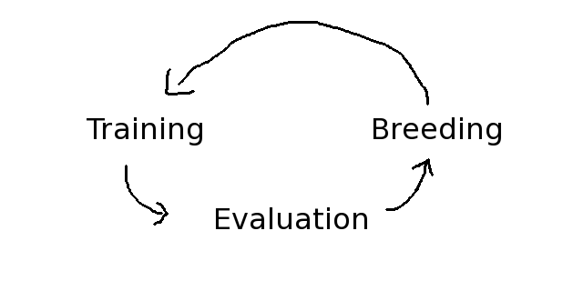
Game Demo (Manual)
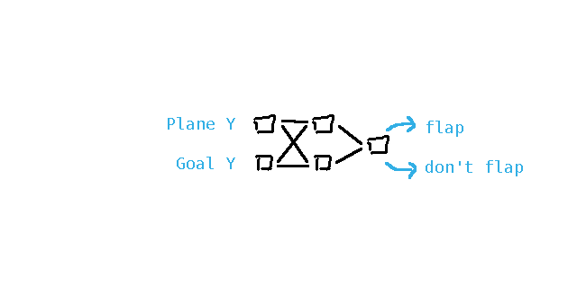
Game Demo (Autopilot)
if/else is a one-way connectionif/elseif is a two-way connectionif/else example:
if (a === true) {
if (b === false && a === true) {
return true;
}
}
return false;if (a === true) {
if (b === false) {
return true;
}
}
return false;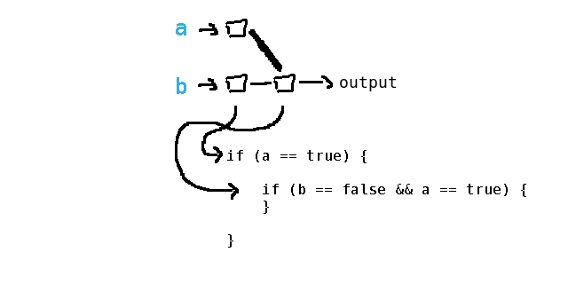
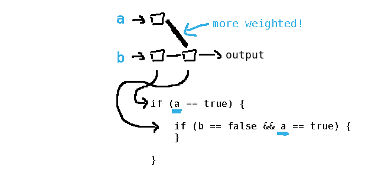
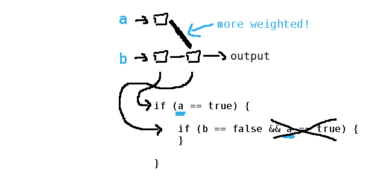
Wait a second... what about vectors and stuff?
if (whatever < 0.5) {
// whatever is false-ish
} else if (whatever > 0.5) {
// whatever is true-ish
}if (a > 0.1 && a < 0.2) {
// dict entry #1
} else if (a > 0.2 && a < 0.3) {
// dict entry #2
} else {
// etc ...
}
Game Demo (autobattle)
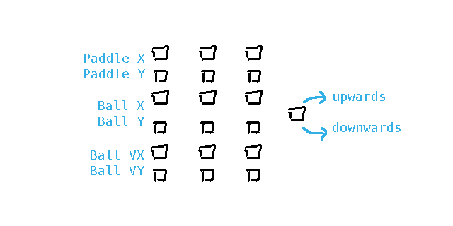
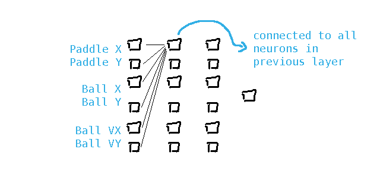
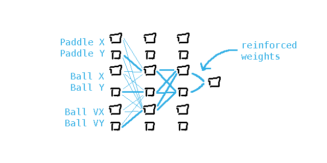
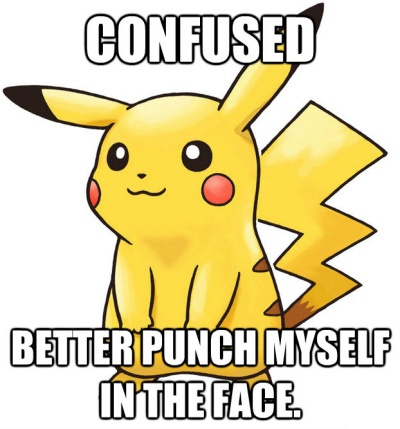
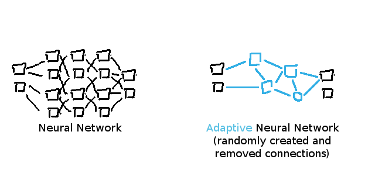
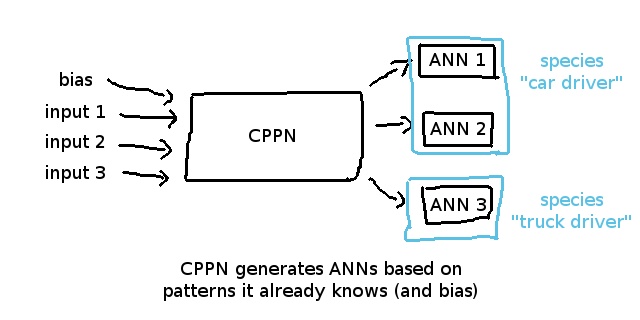
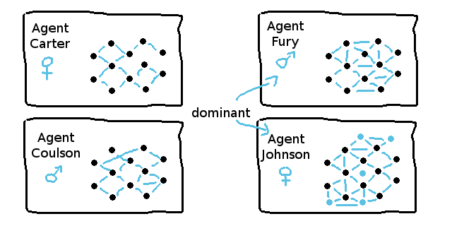
MarI/O Demo (by Sethbling)
Backprop NEAT Demo (by hardmaru)
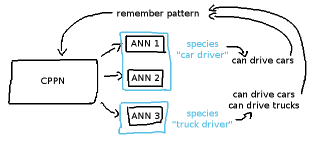
HyperNEAT Racers Demo
Questions and Answers